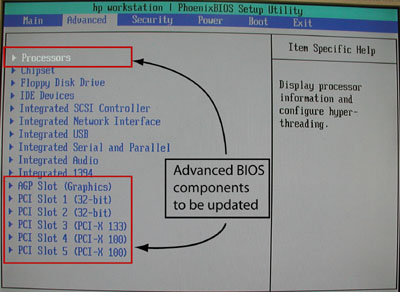
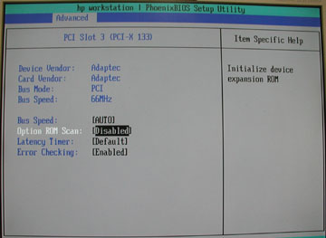
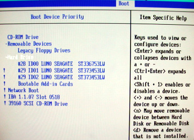
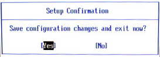
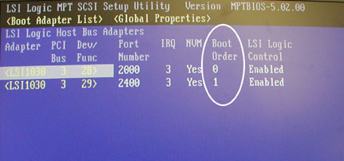
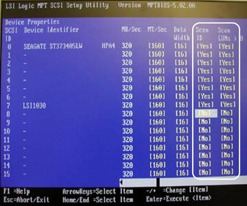
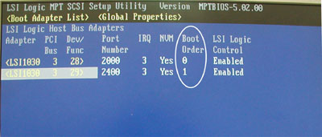
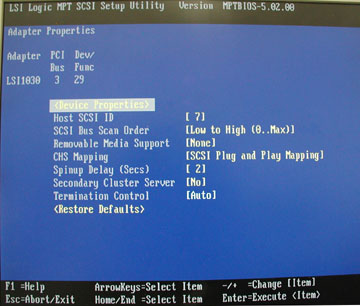
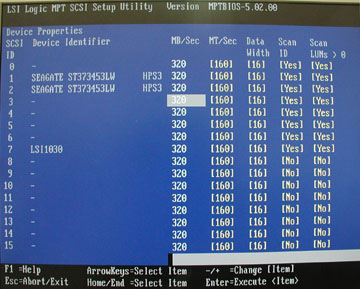
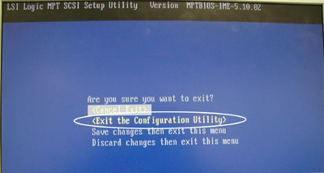

Operating Documentation
Direction 5193574-800, Rev# 22
LightSpeed 7.X Service Methods
Module Version 4.0, Version Date 11/19/07
Operating Documentation |
| Last Revised: | 16 November 2007 |
(For GOC3, GOC4, and GOC5 Operator Console systems) This procedure describes how to verify and/or flash the HP xw8000 BIOS (JQ.W1.13US version) with default HP BIOS settings and then set up the BIOS to specified GE settings. If unsure about the state of current settings, set the defaults first using the main BIOS menu option.
The floppy disk for flashing is labeled: CT HiSpeed / LightSpeed Linux Console BIOS v1.13 (PN 5138295)
| NOTE: | If you know that the BIOS software is at version 1.13
but suspect that the Host BIOS settings may be incorrect, proceed
to Section 3 for step-by-step instructions to verify the GE-specified
settings, or if you don't need step-by-step instructions, you can
simply refer to the tables in Section 6. Otherwise, proceed to Section 2 to flash/update the Host BIOS. Refer to Appendix A for Purchase Specification information. |
If the application software is up, use the following command in a Unix Shell to bring Applications software down:
{ctuser@hostname} cleanMon
Open the Operator Console front cover.
Insert the proper floppy disk CT HiSpeed / LightSpeed Linux Console BIOS v1.13 into the Host Computer.
When Application Software is down, at the toolchest open a Unix Shell and type:
{ctuser@darc} halt
The Operator Console monitor will display a System halted message when it is acceptable to power OFF the Operator Console.
| NOTE: | (For 06MW03.X Software) Wait 1-2 minutes after the “System halted” message appears to allow the VDARC Node to properly power-down. SW release 06MW29.7 and later has corrected this issue. |
Power OFF the Operator Console at the front panel switch.
Wait 30 seconds to allow all disk drives to settle; then power ON the Operator Console at the front panel switch.
Power ON the Operator Console at the front panel switch.
As the Host Computer restarts, the floppy disk boot process message will appear.
When the BIOS Setup Utility screen is displayed, select A Flash BIOS by typing A and pressing the <Enter> key.
The BIOS will begin to flash from the floppy. Allow the BIOS to flash completely.
When a message including “PRESS ANY KEY TO RESTART THE SYSTEM” is displayed, first remove the BIOS floppy disk from the drive. This prevents a second boot-up from floppy.
Next, press any key on the keyboard, for example, <Spacebar>. The Host Computer will proceed to reboot.
Tthe BIOS flash process is now complete.
If you did not flash the Host BIOS via floppy, reboot the Host Computer now.
When the hp invent screen appears on the monitor, press <F2> to interrupt the boot-up sequence and to enter the Host BIOS setup mode.
Verify that the Main screen is displayed.
View the BIOS Version and verify it is JQ.W1.13US.
Changes can be made by cursor-selecting the parameter, then using the <+> and <-> keys on the numeric keypad to toggle its value.
The Main setup screen is shown in Illustration 1. Confirm that the following parameters are set as follows:
Installed O/S: [Other/NT/Linux]
Legacy USB Support: [Disabled]
Illustration 1: Main Setup Screen

From the Main screen, use the <right arrow> to navigate to Advanced. The Advanced setup screen is shown below. The BIOS components that will be updated in the next steps are detailed in Illustration 2.
Illustration 2: “Advanced” Settings Screen

Use the <down arrow> to navigate to Processors and press <Enter>.
Set the following Processors parameter as indicated:
Hyper-Threading [Enabled]
Press <Esc> to return to the Advanced screen.
Navigate to AGP Slot (Graphics) and press <Enter>.
Set the following AGP Slot (Graphics) parameters as indicated:
Enable Master: [Enabled]
(For PET RW 2368697-7) (For all others) Graphics Aperture: [64MB] or [128Mb]
Press <Esc> to return to the Advanced screen.
Navigate to PCI Slot 1 and press <Enter>.
Set the following PCI Slot 1 parameter as indicated:
Option ROM Scan:[Disabled]
Press <Esc> to return to the Advanced screen.
Navigate to PCI Slot 2 and press <Enter>.
Set the following PCI Slot 2 parameter as indicated:
Option ROM Scan:[Disabled]
Press <Esc> to return to the Advanced screen.
Navigate to PCI Slot 3 and press <Enter>.
(For Adaptec)
Set all PCI Slot 3 parameters as shown in Illustration 3.
(Specifically, set Option ROM Scan to [Disabled].)
Illustration 3: Advanced PCI Slot 3 Screen

(For QLogic) (Device Vendor and Card Vendor are listed as 1077H.)
Set all PCI Slot 3 parameters as shown above, EXCEPT
Set Option ROM Scan to [Enabled].
Press <Esc> to return to the Advanced screen.
Navigate to PCI Slot 4 and press <Enter>.
Set the following PCI Slot 4 parameter as indicated:
Option ROM Scan:[Disabled]
Press <Esc> to return to the Advanced screen.
Navigate to PCI Slot 5 and press <Enter>.
Set the following PCI Slot 5 parameter as indicated:
Option ROM Scan:[Disabled]
Press <Esc> to return to the Advanced screen.
Navigate to the Power tab.
Set the following Power parameter as indicated:
Remote Power-On:
(For PET) [Enabled]
(For all others) [Disabled]
Navigate to the Boot tab.
Set all Boot parameters as shown in Illustration 4.
Illustration 4: “Boot” Screen

Navigate to Boot Device Priority and press <Enter>.
Set the sequence of drives in the following order:
Legacy Floppy Drives
CD-ROM Drive
Hard Drive
To do this, navigate to each item to be moved and then use either the <+> or <-> key to move the item to the correct sequence.
Arrow-select (move to) Hard Drive and press <Enter> again.
Set the hard drive parameters as shown in Illustration 5.
| NOTE: | The <!> indicates that the device is
disabled. Select each parameter and press the <Shift> and <1> together to enable or disable it. This is indicated by ! shown for each parameter disabled but not shown for enabled. This means ID00 LUN0 should be the only hard drive enabled (without !). |
Illustration 5: Boot Device Priority Screen

Press <Esc> to return to the Boot screen.
Save the BIOS settings:
Navigate to the Exit tab.
Select Exit Saving Changes and press <Enter>. See Illustration 6.
Illustration 6: “Exit” Screen with Save

Select [Yes] and press <Enter> again to “Save configuration changes and exit now”. See Illustration 7.
Illustration 7: Save Configuration Screen

At this point, the Host BIOS setup is complete.
| NOTE: | After saving the configuration changes and rebooting,
the SCSI CD-ROM drive shown as the last item listed inIllustration 5 may be missing,
as indicated by the message: Adapter/configuration may have changed, reconfiguration is suggested! Press Ctrl-C to start LSI Logic Configuration Utility… Ignore this message. |
The following steps verify that the SCSI channel settings are set correctly for each channel/disk/controller. The SCSI Setup is set back to default values when the BIOS is flashed. If an issue occurs, reflash the Host BIOS then perform the Section 4 “Set Up the Host BIOS.”
Remove power to the host computer by pressing the power button on the front for 5 seconds.
Reboot the Host Computer by pressing the power button again.
While the computer is booting, verify at the bottom-left of the screen that the BIOS version indicates 1.13. Press any key.
When prompted, press <Ctrl> + <C> to interrupt the boot-up sequence and to start the LSI Logic SCSI Configuration Utility.
Overview: The following steps verify that the SCSI channel settings are set correctly for each channel/disk/controller.
In the LSI Logic MPT SCSI Setup Utility, select the adapter which is identified by “Boot Order 0” and press <Enter> to access the Adapter Properties menu.
Illustration 8: Boot Adapter List - Boot Order 0

Illustration 9: Adapter Properties Window

Verify that the settings are as shown above.
Highlight Device Properties and press <Enter>.
For SCSI ID 0 through SCSI ID 7, verify that Scan ID and Scan LUN values are set to [Yes] as shown below.
If needed, navigate to any that need to be changed and press the <-> key to toggle the Scan ID and Scan LUN values to [Yes].
Illustration 10: Device Properties for OS Drive - Scan ID and Scan LUN

For SCSI ID 8 through SCSI ID 15, set Scan ID and Scan LUN to [No] as shown above.
Navigate to those that need to be changed and press the <-> key to toggle the Scan ID and Scan LUN values to [No].
Press <Esc> to exit the Device Properties setup screen.
Press <Esc> to exit the Adapter Properties screen.
(For when changes were made) Navigate to (Save Changes then exit this menu), and press the <Enter> to save the changes.
In the LSI Logic MPT SCSI Setup Utility, select the adapter which is identified by “Boot Order 1” and press <Enter> to access the Adapter Properties menu.
Illustration 11: Boot Adapter List - Boot Order 1

The process shows: Scanning for devices
Illustration 12: Adapter Properties - Boot Order 1

Verify that the settings are as shown above.
Highlight Device Properties and press <Enter>.
For SCSI ID 0 through SCSI ID 7, verify that Scan ID and Scan LUN values are set to [Yes] as shown in Illustration 13.
If needed, navigate to any that need to be changed and press the <-> key to toggle the Scan ID and Scan LUN values to [Yes].
Illustration 13: Device Properties for Image Disk 1 and Image Disk 2 - Scan ID and Scan LUN

For SCSI ID 8 through SCSI ID 15, set Scan ID and Scan LUN to [No] as shown in Illustration 13.
Navigate to those that need to be changed and press the <-> key to toggle the Scan ID and Scan LUN values to [No].
Press <Esc> to exit the Device Properties setup screen.
Press <Esc> to exit the Adapter Properties screen.
(For when changes were made) Navigate to (Save Changes then exit this menu) and press <Enter> to save the changes.
Press <Esc> to exit the LSI Logic MPT SCSI Setup Utility screen.
Select (Exit the Configuration Utility) and press <Enter>.
Illustration 14: Exit the Configuration Utility

Table 1: Settings for CT GRE HP xw8000 Host Computer (PN 2368697-3)
| Hardware | ||||
|---|---|---|---|---|
| SCSI Channel 0 Disk | Ultra 320 36 GB 15K RPM 1st (bottom) disk (SCSI ID 0) | |||
| SCSI Channel 1 Disks | Ultra 320 73 GB 15K RPM 2nd (middle) disk (SCSI ID 1) | |||
| Ultra 320 73 GB 15K RPM 3rd (top) disk (SCSI ID 2) | ||||
| Note: Both Hard Disk Drives should be the same model number and firmware version for optimal RAID0 performance. The Image Disk Drives require SCSI ID jumpers installed. | ||||
| Main Memory | 2 GB (Sites with DMPR option must upgrade to 4GB.) | |||
| PC BIOS Settings (Bold = changes from default values) | ||||
| Main | BIOS Version: | JQ.W1.13.US | ||
| Installed O/S: | [Other/NT/Linux] | |||
| Legacy USB Support: | [Disabled] | |||
| Advanced | Processors: | |||
| · Hyper-Threading | [Enabled] | |||
| AGP Slot (Graphics Card): | ||||
| · Graphics Aperture: | [128Mb] | |||
| PCI Slot 1 (OPEN): | ||||
| · Option ROM Scan: | [Disabled] | |||
| PCI Slot 2 (OPEN): | ||||
| · Option ROM Scan: | [Disabled] | |||
| PCI Slot 3 (SCSI Card): | ||||
| · Option ROM Scan: | [Enabled] (QLogic 12160/33 only) | |||
| (** Select proper SCSI card **) | [Disabled] (Adaptec 39160 only) | |||
| PCI Slot 4 (Master NIC): | ||||
| · Option ROM Scan: | [Disabled] | |||
| PCI Slot 5 (NIC): | ||||
| · Option ROM Scan: | [Disabled] | |||
| Power | Remote Power-On: | [Disabled] | ||
| After Power Failure: | [Power On] | |||
| Boot | QuickBoot Mode: | [Enabled] | ||
| Display OPROM Message: | [Enabled] | |||
| Default Primary Video Adapter: | [AGP] | |||
| Boot Device Priority | ||||
| Removable Devices: | ||||
| · 1st boot device | Legacy Floppy Drives | |||
| · 2nd boot device | CD-ROM Drive | |||
| · 3rd boot device | Hard Drive: | |||
| · #28 ID00 LUN 0 (Hard Disk) | ||||
| ******************************************All other listed boot devices under Hard Drive (shown to the right) are set to Disabled with ! (shift 1 sequence)****************************************** | · ! #29 ID01 LUN0 | |||
| · ! #29 ID02 LUN0 | ||||
| · ! Bootable Add-in Cards | ||||
| · ! Network Boot | ||||
| · ! IBA 1.1.07 Slot 0518 | ||||
| Exit | Exit Savings Changes | [Yes] | ||
| NOTE: After the 1.13 BIOS flash load and exit saving changes, the 39160 SCSI CD-ROM Drive may not be displayed. This is normal. | ||||
| LSI Configuration Utility | Press Ctrl-C | |||
| SCSI BIOS Changes | Disable SCAN ID and SCAN LUN for devices 8 through 15 on both internal SCSI controller channels. | |||
Table 2: Settings for PET RW HP xw8000 Host Computer (PN 2368697-7)
| Hardware | ||||
|---|---|---|---|---|
| SCSI Channel 0 Disks | Ultra 320 36 GB 15K RPM 1st (bottom) disk (SCSI ID 0) | |||
| Ultra 320 36 GB 15K RPM 2nd (middle) disk (SCSI ID 1) | ||||
| SCSI Channel 1 Disk | none | |||
| Main Memory | 2 GB (Sites with DMPR option must upgrade to 4GB.) | |||
| PC BIOS Settings (Bold = changes from default values) | ||||
| Main | BIOS Version: | JQ.W1.13.US | ||
| Installed O/S: | [Other/NT/Linux] | |||
| Legacy USB Support: | [Disabled] | |||
| Advanced | Processors: | |||
| · Hyper-Threading | [Enabled] | |||
| AGP Slot (Graphics Card): | ||||
| · Graphics Aperture: | [64 Mb] | |||
| PCI Slot 1 (OPEN): | ||||
| · Option ROM Scan: | [Disabled] | |||
| PCI Slot 2 (OPEN): | ||||
| · Option ROM Scan: | [Disabled] | |||
| PCI Slot 3 (SCSI Card): | ||||
| · Option ROM Scan: | [Enabled] | |||
| PCI Slot 4: | ||||
| · Option ROM Scan: | [Disabled] | |||
| PCI Slot 5: | ||||
| · Option ROM Scan: | [Disabled] | |||
| Power | Remote Power-On: | [Enabled] | ||
| After Power Failure: | [Power On] | |||
| Boot | QuickBoot Mode: | [Enabled] | ||
| Display OPROM Message: | [Enabled] | |||
| Default Primary Video Adapter: | [AGP] | |||
| Boot Device Priority | ||||
| Removable Devices: | ||||
| · 1st boot device | Legacy Floppy Drives | |||
| · 2nd boot device | CD-ROM Drive | |||
| · 3rd boot device | Hard Drive: | |||
| · #28 ID00 LUN 0 (Hard Disk) | ||||
| ******************************************All other listed boot devices under Hard Drive (shown to the right) are set to Disabled with ! (shift 1 sequence)****************************************** | · ! #28 ID01 LUN0 | |||
| · ! Bootable Add-in Cards | ||||
| · ! Network Boot | ||||
| · ! IBA 1.1.07 Slot 0518 | ||||
| Exit | Exit Savings Changes | [Yes] | ||
| NOTE: After the 1.13 BIOS flash load and exit saving changes, the 39160 SCSI CD-ROM Drive may not be displayed. This is normal. | ||||
| LSI Configuration Utility | Press Ctrl-C | |||
| SCSI BIOS Changes | Disable SCAN ID and SCAN LUN for devices 8 through 15 on both internal SCSI controller channels. | |||